Boot Band Installation
Boot Band InstallationSpecial Tools Required
^ Boot band tool, KD-3191 or equivalent, commercially available
^ Boot band pliers, Kent-Moore J-35910 or equivalent, commercially available
Double Loop Type
1. Fit the boot ends onto the driveshaft and the inboard joint, then install the new double loop band (A) onto the boot.
NOTE: Pass the end of the new double loop band through the clip (B) twice. Make sure the loop faces forwards on the driveshaft, towards the front of the vehicle.
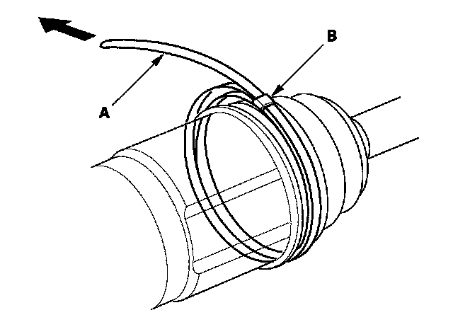
2. Pull up the slack in the band by hand.
3. Mark a position (A) on the band 10-14 mm (0.4-0.6 in.) from the clip (B).
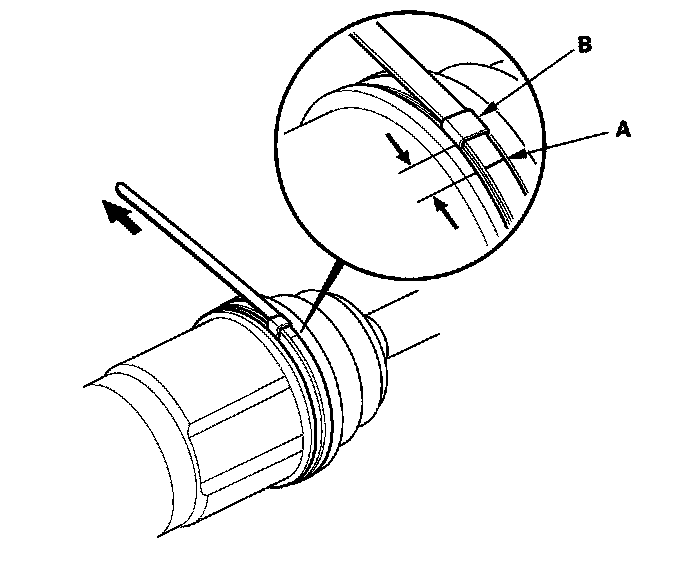
4. Thread the free end of the band through the nose section of a commercially available boot band tool KD-3191 or equivalent (A) and into the slot on the winding mandrel (B).
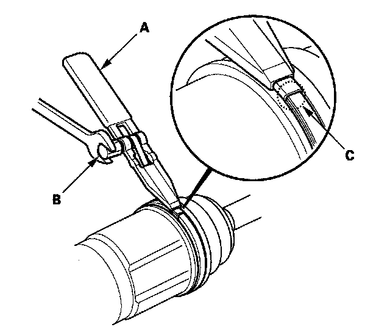
5. Using a wrench on the winding mandrel of the boot band tool, tighten the band until the marked spot (C) on the band meets the edge of the clip.
6. Lift up the boot band tool to bend the free end of the band 90 degrees to the clip. Center-punch the clip, then fold over the remaining tail onto the clip.
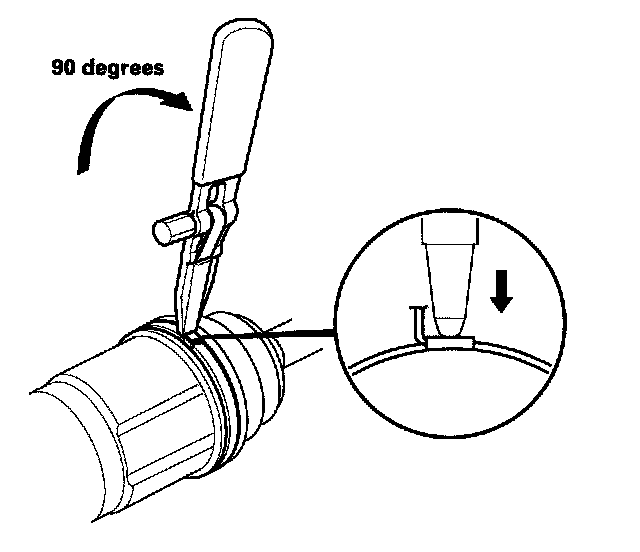
7. Unwind the boot band tool, and cut off the excess free end of the band to leave a 5-10 mm (0.2-0.4 in.) tail protruding from the clip.
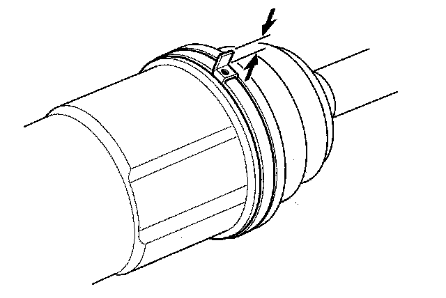
8. Bend the band end (A) by tapping it down with a hammer.
NOTE:
^ Make sure the band and clip do not interfere with anything on the vehicle and that the band does not move.
^ Clean any grease remaining on the surrounding surfaces.
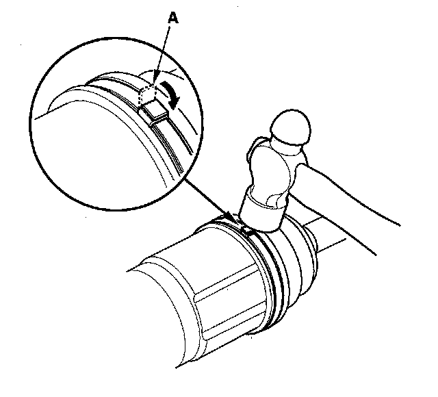
Ear Clamp Type
1. Close the ear portion (A) of the band with commercially available boot band pliers Kent-Moore J-35910 or equivalent (B).
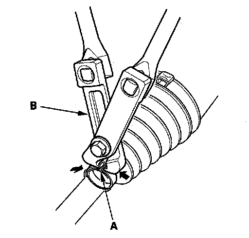
2. Check the clearance between the closed ear portion of the band. If the clearance is not within specifications, close the ear portion of the band tighter.
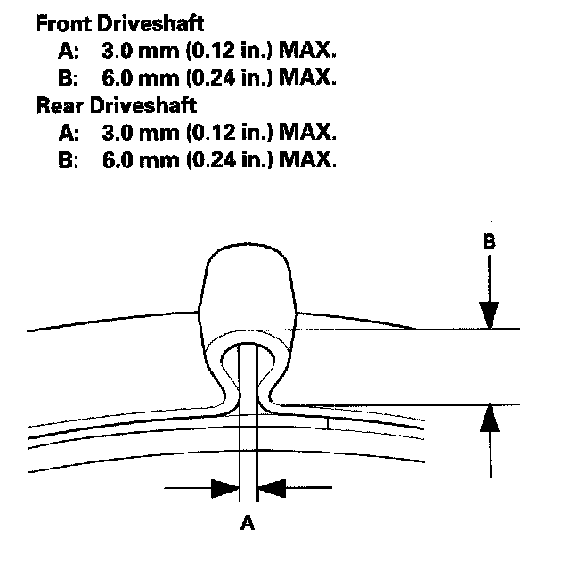
Locking Tab Type
1. Install a new locking tab type boot band on the inboard joint side of the inboard boot. Fold down the locking tabs.
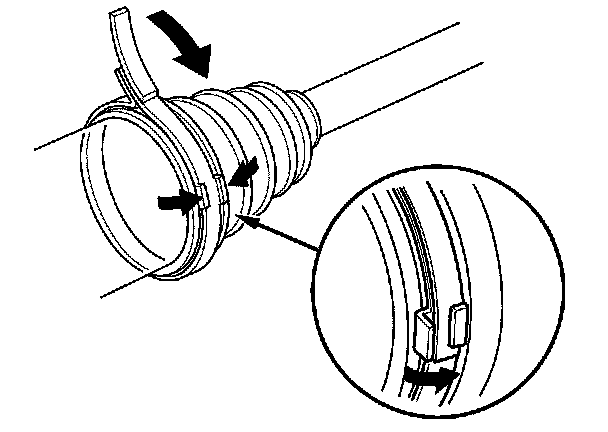
2. Lightly tap on the doubled-over portions to flatten them.
Low Profile Type
1. Install the new low profile band (A) onto the boot (B) then hook the tab portion (C) of the band.
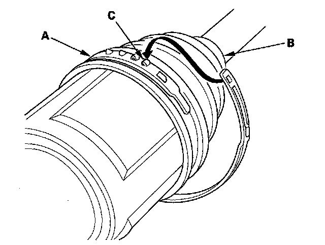
2. Close the hook portion of the band with commercially available boot band pliers (A) then hook the tabs portion (B) of the band.
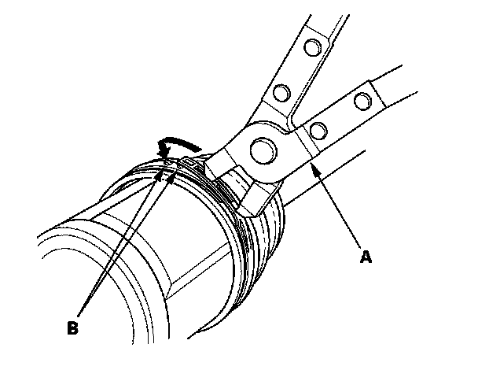